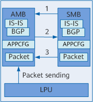
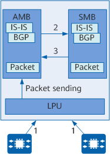
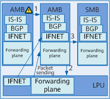

Table 1 describes the differences between NSF (GR) and NSR.
Feature |
Advantage |
Disadvantage |
|---|---|---|
NSF |
NSF loads are light and therefore NSF does not degrade system performance. |
NSF needs to be enabled on each node across a network. The NSF interworking between devices is complex. NSF fails if the control planes of multiple nodes fail simultaneously. After the fault is rectified, it takes a long time for NSF to restore data and network routing information. Changes to the network topology may cause NSF failures. |
NSR |
NSR allows a local node to perform an AMB/SMB switchover separately. This means that neighbor nodes do not need to support NSR or detect routing information changes. NSR ensures proper traffic transmission even if the control planes of multiple nodes fail simultaneously. After the fault is rectified, data is quickly restored. In addition, network topology information can be restored during the AMB/SMB switchover. |
NSR loads are heavy and therefore NSR degrades system performance. Software exceptions can cause NSR failures. |